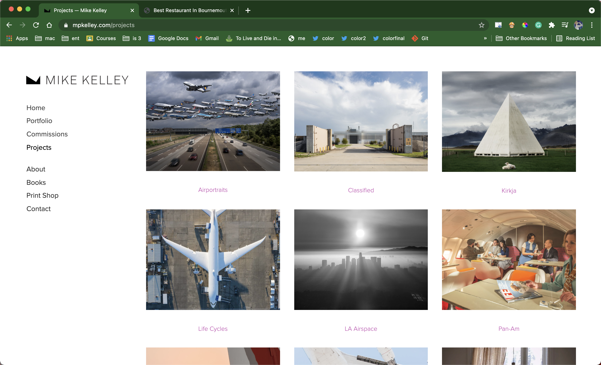

The website I referenced is a marketing website for their products. The front page of the website, as shown in the fgure above, is what I took as a reference for my website. It looks very minimal and the bold. I also made my webpage similar. In their website the words in the fornt page are images but instead of images I wrote it and used CSS to style it.
This is a website of a restaurant. In this website the navigation is placed vertically in the left side. In my website as will I referenced the restaurant's website and kept my navigation bar in the left side vertically. In their website they have used nav tag and listed the content in an unorderlist but I used div to store links and CSS to style them.
This is a architectural website. I referenced the gallery of this website but only kept two pictures instead of three. In my website the pictures are just to view where as in their website the pictures are link to another page.